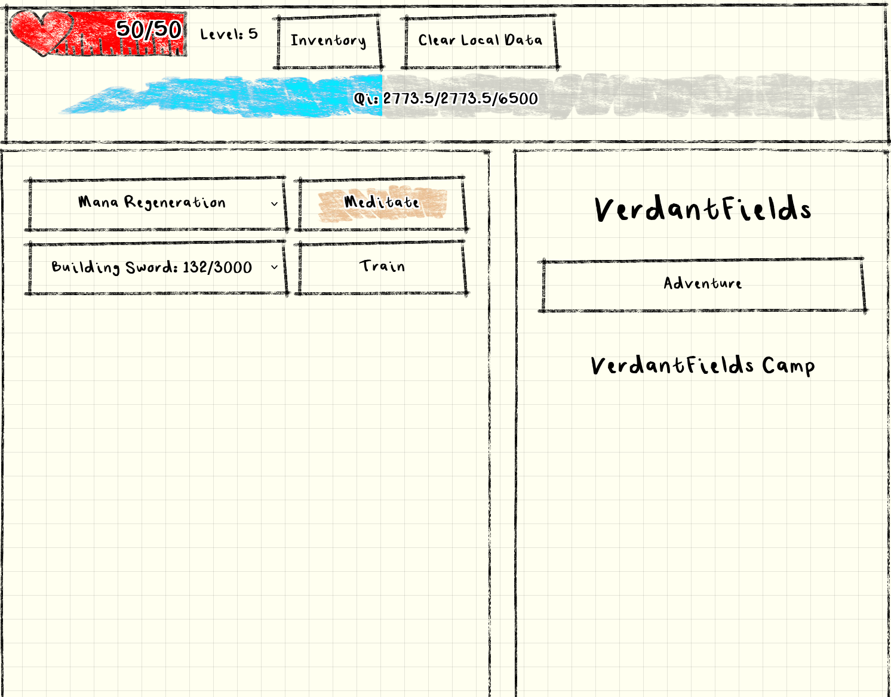

Hi, my name is Andrew.
I am a Computer Science student looking to enter the field while pursuing my Master's degree and passion for software development.
I am currently based in Southern California, United States, and am looking to enter the field. I currently specialise in web technologies such as Javascript/Typescript, with an interest in the back end with NodeJS or Rust, as well as an interest in research.
I first began my interest in programming and web development in highschool, as I had a growing fascination with the web, and sought the skills to design websites of my own. Between the few classes my highschool offered for web development and my own unending need to write projects myself, I learned to program and build websites for myself. Since then I have branched out into a love of writing small games, and other projects I truly enjoy.
See my work
 Cultivation Idle is an incremental game with text-based rpg elements. It is a browser based game developed with Node.js and SolidJS. Designed with a hand-drawn aesthetic, you experience a fantasy world through text and doodles.